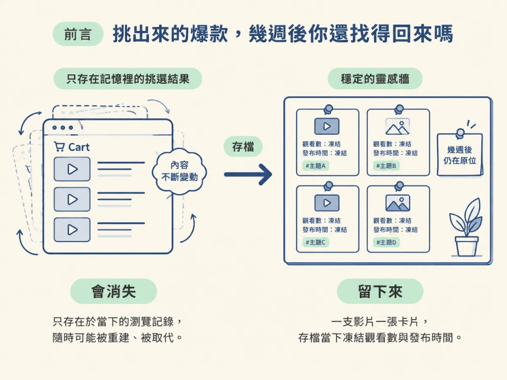
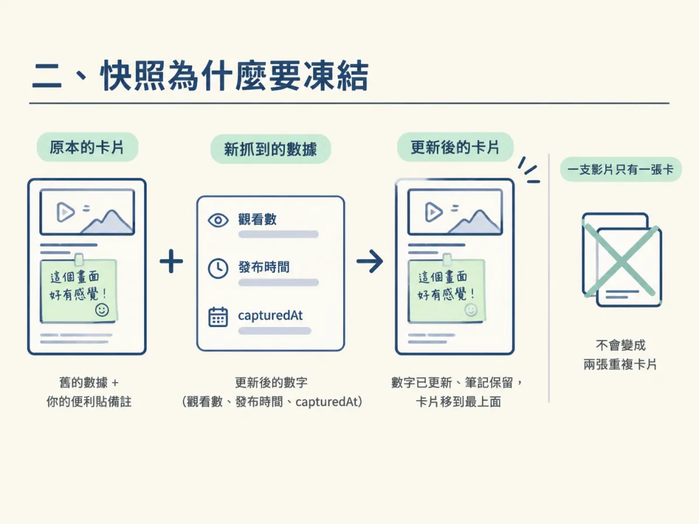
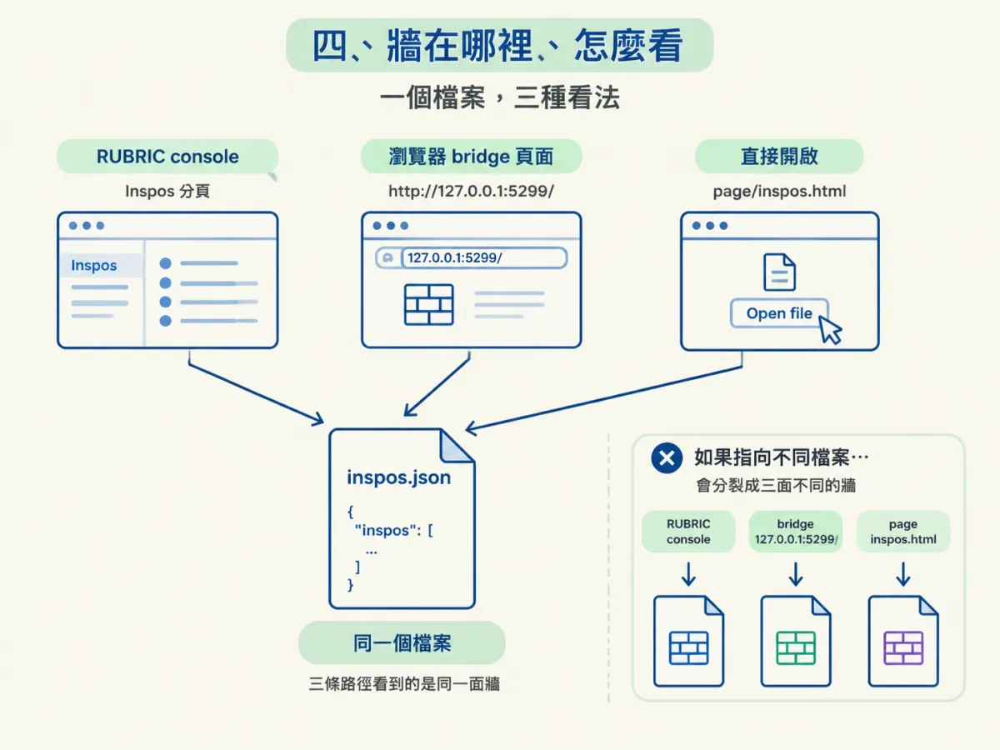

上一步你從結果頁挑出了幾支值得研究的題材。但它們現在只活在兩處：結果頁的 cart，和你的記憶裡。三週後你想找「我之前存過的那支、講某個主題的影片」時，結果頁早就重建過好幾輪，腦中的印象也模糊了。
這一步把這些參考固定下來：用 /inspo 把影片存進你自己的靈感牆，之後請 agent 依主題從牆上取用。存的時候數字會凍結在當下，找的時候比對的是意思——這兩個設計決定了幾個月後這面牆還能不能用。

把值得研究的 outlier 存進自己的 /inspo 靈感牆，並能請 agent 依主題或情境從靈感牆取出最合適的幾支。
做完這一段，你會有一面自己的靈感牆：一支影片一張卡片，帶著標題、頻道、當時的觀看數和你自己寫的備註。之後你要做新片、想找某個主題的參考，開口問 agent 就好，它會從牆上挑出最合適的幾支，各附一行理由。
前置條件很輕：Node.js 18 以上是唯一的必備（helper 只用 Node 內建模組），加上裝好的 robonuggets-inspo.zip。yt-dlp 選裝，但建議裝上——有它讀 YouTube 比較穩，因為它會跟著 YouTube 改版更新。
存檔只有一個指令：scripts/add-inspo.mjs。它是這個 skill 的 helper，所有對牆的讀寫都由它負責。檔案開頭的使用說明寫齊了全部用法：
// Usage:
// node add-inspo.mjs "<youtube link or id>" ["<another link>" ...] add or refresh videos
// node add-inspo.mjs "<youtube link>" --note "why you saved it" add one video with a note
// node add-inspo.mjs --remove "<youtube link or id>" take one video off the wall
// node add-inspo.mjs --list [words] print the wall, one short entry per video
// (words: videos matching any of them, best first)照順序看：第一個用法是存檔，一次呼叫可以放好幾個連結，一支失敗不會中斷其他支；--note 讓你附上一句「為什麼存它」，但帶筆記時一次只能一個連結——程式會直接擋下來，因為一則備註對應兩支影片就亂了；--remove 把一支從牆上拿掉；--list 印出整面牆，後面跟字詞就只留符合的、最符合的排前面。
連結的格式很寬鬆：完整 YouTube 網址、Shorts 連結、youtu.be 短網址、甚至裸的 11 碼影片 id 都可以。存下去之後，終端機每個影片印一段短訊息：標題、觀看數、多久前發布、長度、頻道、存檔路徑。看到這段輸出就是成功了。
一個警告：--remove 是真的把卡片從牆上刪掉。刪掉後再存回來雖然可以，但當初凍結的那組數字就換成新的了——如果你本來想留的就是「它當時的樣子」，先想清楚再刪。
存檔的核心設計是：觀看數、發布多久這些數字，凍結在你存它的那一刻。理由是，你當初被這支影片吸引，就是因為它那時的表現——三個月後它漲到多少，跟你為什麼存它無關。這也是幾個月後這面牆還有意義的原因。
helper 裡負責存檔的 add() 函式把這件事寫得很清楚：
const fresh = {
id,
url: 'https://www.youtube.com/watch?v=' + id,
title: raw.title && raw.title !== 'NA' ? raw.title : id,
…
capturedAt: new Date().toISOString()
};
const store = readStore();
const prev = store.inspos.find(v => v.id === id) || {};
// Keep anything the user added to the old card (a note, their own fields), refresh the rest.
const video = { ...prev, ...fresh };
if (note) video.note = note;
store.inspos = store.inspos.filter(v => v.id !== id); // one card per video
store.inspos.unshift(video); // newest first
writeStore(store);逐行讀一次。fresh 是這次從 YouTube 抓到的新資料，capturedAt 用 ISO 時間記下存檔當下，這就是「凍結」發生的地方。接著 prev 找牆上既有的同一張卡，{ ...prev, ...fresh } 把兩者合併：新抓到的數字蓋掉舊的，但你在舊卡片上自己加的欄位（尤其是筆記）會留下來——註解寫的就是這件事。if (note) 把這次新寫的筆記蓋上去。最後兩行處理順序：filter 先把同一支的舊卡移除，保證一支影片只有一張卡；unshift 把它放到最前面，牆上永遠最新的在上面。
所以「再存一次」的效果是：數字刷新、筆記保留、卡片跳到最上面。日常用起來就像一支影片一個書籤，書籤上的便利貼不會因為更新數據而不見。

當你要做新片、或想找符合某個主題、格式、心情的參考時，流程是這樣：
node <skill 資料夾>/scripts/add-inspo.mjs --list，不要自己去找檔案。helper 知道牆在哪（你可能用 INSPOS_FILE 搬過家），會印出那個路徑，並把每支影片列成一條短紀錄。--list <字詞> 只留符合任一字詞的影片，最符合的排前面。--list 印出的那個檔案裡的那筆紀錄就好。這裡有一個分工值得記住：存檔是一次腳本呼叫、零判斷，SKILL.md 建議這種活可以丟給便宜的小模型跑；「挑出最合適的 3–5 支、各說一行理由」才是需要判斷的部分，留給你的 agent。
牆的本體是一個純文字的 JSON 檔，預設在 <home>/inspos/inspos.json，或者 INSPOS_FILE 指到的地方。它的形狀是：
{ "inspos": [ { id, url, title, channel, subscribers, views, viewsText, published, ago, duration, tags, description, note, capturedAt } ] }最新的排最前面。手動編輯這個檔沒問題——helper 會保留它自己不填的欄位，所以你想加自己的欄位就加。看這面牆有三種方式：RUBRIC console 的 Inspos 分頁、bridge 的頁面 http://127.0.0.1:5299/、或直接打開 page/inspos.html（它的 Open file 按鈕會讀你選的 JSON）。三條路徑必須指向同一個檔案，不然你會看到三面不同的牆。

環境變數都是選用的：INSPOS_FILE 決定牆存哪裡、YTDLP_PATH 在 yt-dlp 不在 PATH 時給完整路徑、INSPO_THUMBS_DIR 會另外存一份完整縮圖當設計參考。
helper 讀影片時優先用 yt-dlp（它會跟著 YouTube 改版更新），沒有才自己讀 YouTube 公開頁面。三種常見的錯誤訊息各有對策：
pip install yt-dlp）再試一次。pip install -U yt-dlp 更新）。把確切的訊息轉告使用者。/inspo用一次腳本呼叫把影片存成「數字凍結在當下」的卡片：存檔刷新數字、保留筆記、排到最前面，--remove才會拿掉。取用時先--list，再由 agent 用意思比對挑 3–5 支、各說一行理由。牆就是一個純 JSON 檔，skill、瀏覽器擴充、console 分頁共用同一個檔案。
做完長這樣：每存一支，終端機印一段「Added: …」，--list 看得到它在牆上。把它跟前一步串起來用：跑一次 outliers 掃描、挑出值得研究的、用 /inspo 存下來——這面牆就慢慢變成「你的利基裡什麼正在發生作用」的候選清單。至於快照為什麼凍結、JSON 為什麼是好格式，原理可以慢慢再看；這一步你只要能存、能找。